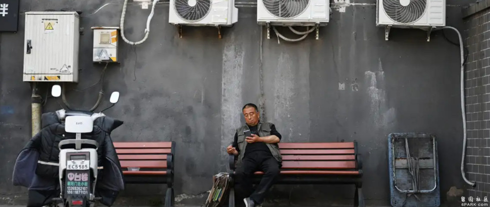
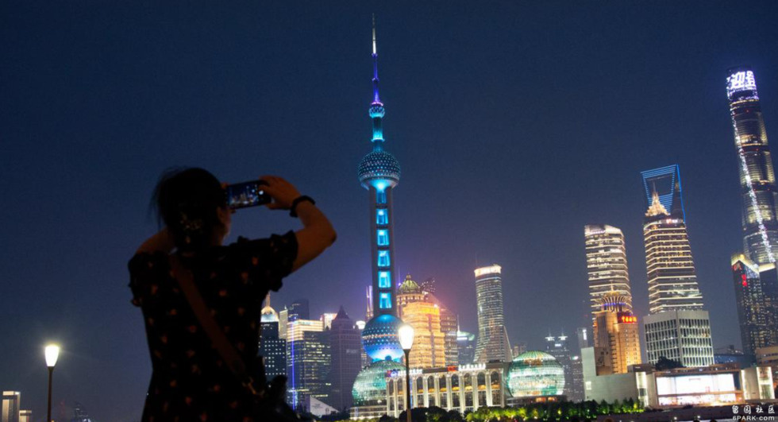

杭州、上海等大都市通过限制装饰性照明来应对高温带来的供电压力。气象专家表示，酷暑桑拿天还将持续一段时间。

（德国之声中文网）今年的8月7日为二十四节气的立秋，不过今年的立秋似乎并未能给中国南方地区带来一丝凉意。持续多日的极端高温天气导致当地用电需求猛增，电网负荷快速攀升。
中国主要城市如何”保民电”？
据路透社消息，浙江省省会杭州市，为应对极端高温天气带来的供电压力，暂停灯光秀等非必要景观照明，以确保民生用电需求。
杭州市因企业家和阿里巴巴、网易等科技巨头而闻名，自8月2日以来，当地气温已连续多日超过40度。
随着杭州电网负荷接连创新高，当地政府表示，将会实施一个”实用”且”细致”的电力保障计划，确保道路等公共空间的功能性照明正常运行，并维护市民夜间出行安全。
另外，有着四大火炉之称的江西省南昌市，其热门打卡点—-南昌八一起义纪念馆的”光影八一”灯关秀也因热浪缩短了展出时间，由原来的每晚两场调整为一场。
作为国际大都市上海，其电网最高负荷也于8月2日首次突破4000万千瓦的大关。据上海电网称，上海市中心陆家嘴地区的公共建筑单位面积耗电量是纽约曼哈顿或东京银座的两倍。

上海电网最高负荷突破4000万千瓦大关图像来源: Ying Tang/NurPhoto/picture alliance
酷暑高温天将会持续多久？
中国当地气象专家在周二（8月6日）表示，极端高温天会持续到8月11日。尽管拉尼娜现象带来了降温效果，但随着全球变暖的加剧，气候恶化已成为新常态。
据悉，今年中国经历了自1961年以来的最热的春天，紧随其后的创记录的五月份高温，与之相伴的是中部农作物地区的为时数周的干旱。
另外，随着酷暑热浪席卷东北亚，近邻韩国和日本均有报道中暑身亡的案例。中国尚未公布是否有因极端高温导致的死亡事件。